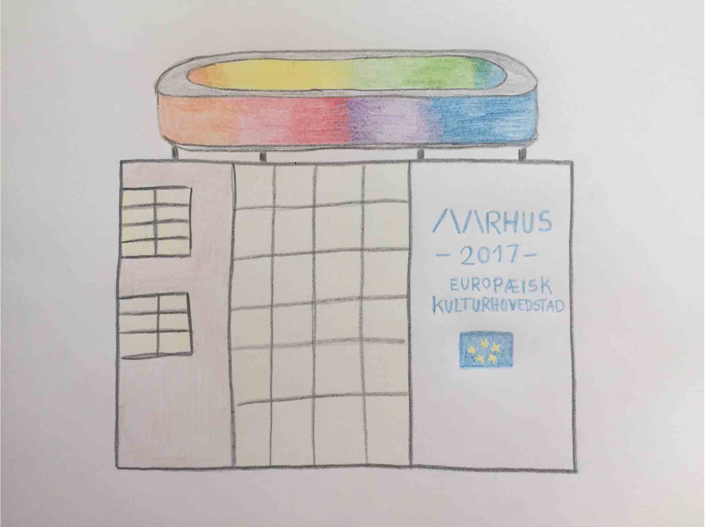
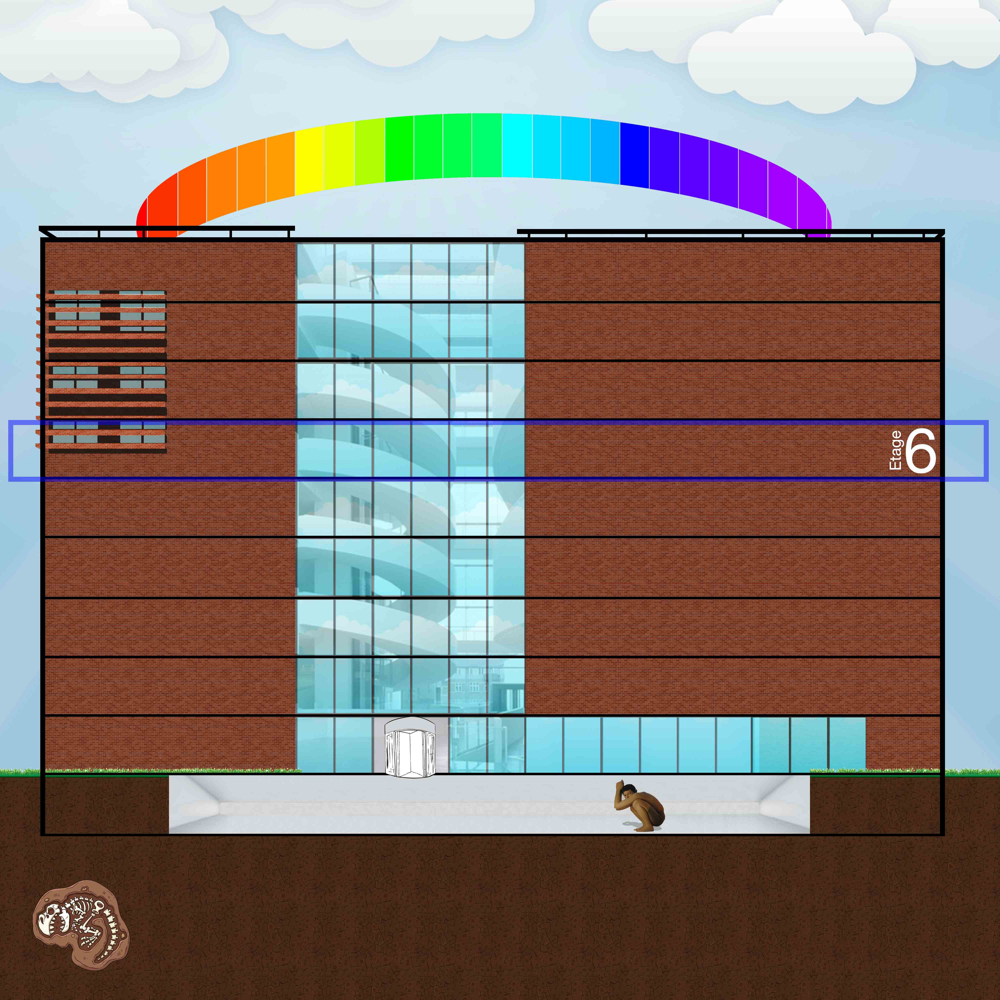
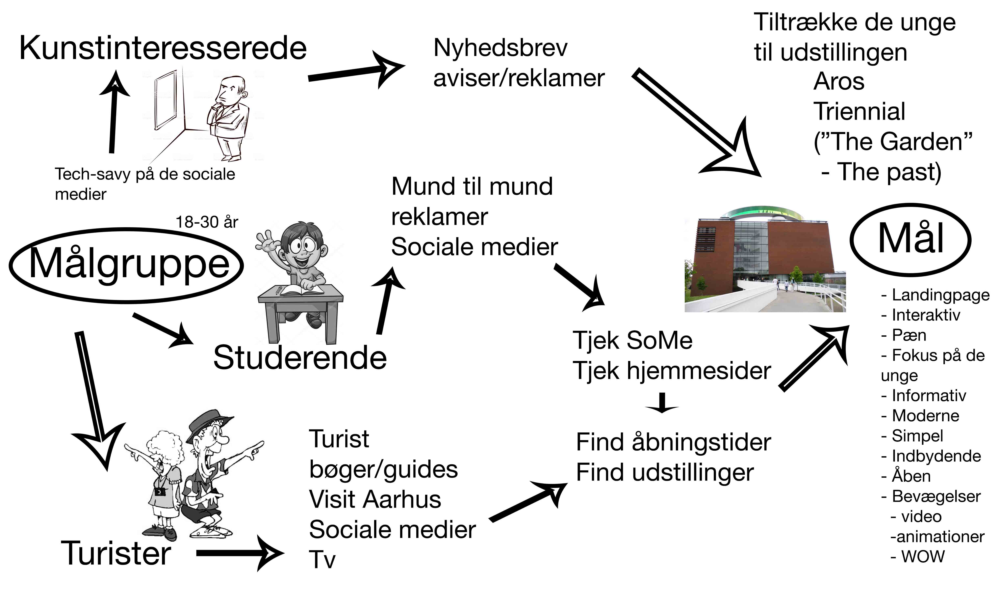
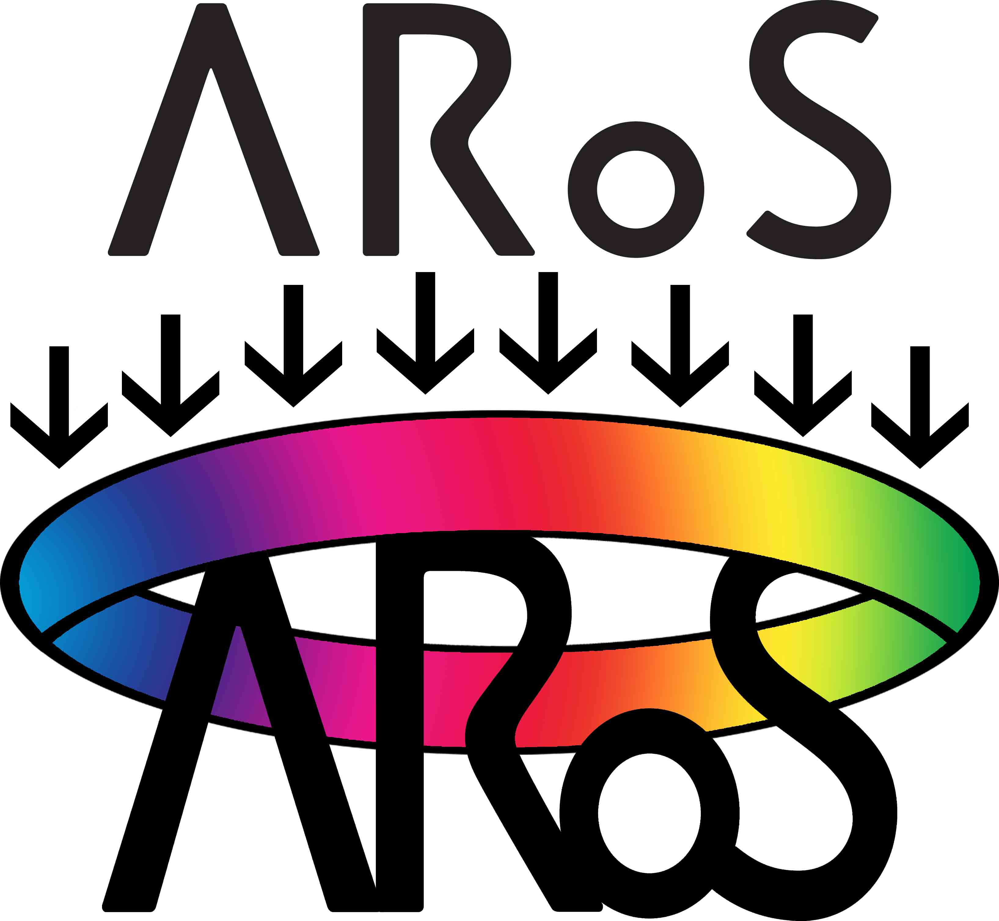

Så er SPRINT-ugen overstået, og det har været en indsigtsrig periode i en helt ny "kreativ" måde at arbejde med et projekt på. Vi valgte, at vores SPRINT-uge skulle bruges på at opdatere Aros’ hjemmeside, som vi syntes var utrolig kedelig at kigge på, og så var den heller ikke godt designet, da deres kunder skal navigere meget rundt (fx for at købe billetter).
Her ses vores mockup af, hvordan idéen kan implementeres til Aros-bygningen. Så skal det være meningen, at man skal kunne scrolle igennem de forskellige etager og se, hvilke udstillinger der er der. Vi lavede også et visuelt kort over brugerens rejse til Aros, hvilke målgrupper der benytter sig af Aros, og hvordan de opsnapper information om museet og dens udstillinger.
  Da vi sad og kiggede hjemmesiden igennem, undrede vi os også over manglen af associationer til regnbuen, som ligger på taget af Aros-bygningen, siden regnbuens lancering i 2011 hurtigt blev en del af Aarhus’ kendetegn. Derfor besluttede vi os for at tage fat i deres meget anonyme logo og give det en opgradering. Her har var meningen at "Aros" skal symbolisere selve bygningen med regnbuen på toppen.
Alt i alt var det en fed uge, og vi fik afprøvet en masse ting. Selvfølgelig er der plads til forbedring, det er der i alle projekter.